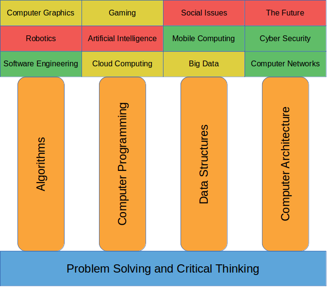
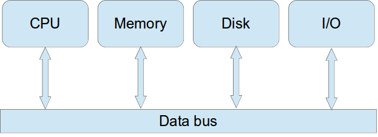

Introduction to LIVING WITH CYBER
1 Our approach to Computer Science
The curriculum is approached from the bottom-up. That is, we first lay a foundation on which the pillars of computer science are iteratively built. We build them concurrently, a little at a time, growing them together until they stand tall. From there, we add top beams that provide further context by revealing more focused areas that represent the applications of computer science.
The foundation provides a solid platform of problem solving and critical thinking skills upon which to build the pillars. The curriculum implements a puzzle-based learning approach to assist in developing higher-order thinking skills (like problem solving and critical thinking) by incorporating specific puzzles (with relevant discussions) at regular intervals. The approach attempts to motivate students to think about how they frame and solve problems that they have never seen before. Strategies to problem solving are then applied more generally to problems in the domain of computer science.

The four pillars of computer science (Algorithms, Computer Programming, Data Structures, and Computer Architecture) are then iteratively built (i.e., a little at a time). They grow as the curriculum progresses, although perhaps not all at exactly the same rate; for example, computer programming may initially grow a bit faster than data structures. By iteratively building the pillars, we are able to quicklycover the breadth of computer science. Although it is initially at a beginner’s level, by this point you should have a good idea of what computer science is already. As they continue to be built, you will increase your knowledge and application of the pillars and how they combine to form the structure of computer science.
The first pillar is Algorithms. It forms the basis for representing solutions to problems. Algorithms allow us to formalize solutions to problems and represent them utilizing various formal methods. A large part of the curriculum focuses on the development of good algorithms as solutions to interesting problems. This allows us to refine our problem solving and critical thinking skills and focus them on the domain of computer science.
The second pillar is Computer Programming. We use computer programming to translate algorithms to a language the computer can understand. In the computer science curriculum, it is first experienced using the Scratch programming language, a puzzle-like way of creating computer programs. Scratch is a great beginner’s programming language because of how it intuitively simplifies dealing with programming language syntax. From there, the curriculum quickly switches to Python, which provides a great way to get through the tedium of beginning computer programming without requiring a lot of background knowledge about various programming paradigms.
Data Structures makes up the third pillar. When writing programs, we usually make use of data structures to store and manipulate data that is required for our algorithms to work properly. The curriculum covers various data structures often used in computer programs. In addition, it focuses on many types of problems often found in computer science, their common solutions (as algorithms), and the various data structures that are often used in those algorithms.
The final pillar is Computer Architecture. Computers have a very well-defined architecture: physical, tangible hardware. The software (e.g., operating systems, applications, computer programs, etc) work intimately with the hardware; and this is what makes the whole thing work. The curriculum makes use of a unique hardware platform that you will use to work on hands-on projects throughout the curriculum. Currently, the platform is made up of a Raspberry Pi computer. The Raspberry Pi is a credit card-sized single-board computer that was developed for curricula that teach basic computer science in schools. Although it is a full computer, it is a bit slower than typical desktops and even laptops. The platform used in the curriculum also includes a touchscreen, a keyboard and mouse, USB-powered speakers, and other components to assist in designing external circuits.
The beams that sit on top of the pillars relate computer science to a variety of focused, derived topics. They primarily exemplify the application of computer science. Some examples include:
- Software engineering
- Cloud computing and big data
- High performance computing
- Computer networks
- Cyber security
- Mobile computing
- Robotics
- Artificial intelligence
- Computer graphics
- Gaming
- Social issues
- The future of computing
The end goals of the curriculum are straightforward. At the conclusion of the course, we expect students to:
- Have knowledge of the breadth of computer science (and thus be able to answer the question, “What is computer science?”);
- Have the ability to solve a variety of problems and think critically through them;
- Have the ability to generate algorithms as solutions to problems;
- Have the ability to manipulate data through data structures;
- Have the ability to translate algorithms to an object-oriented programming language; and
- Have an understanding of the way computer hardware and computer software interact through a well-defined architecture.
2 What is Living with Cyber
At its core, the freshman computer science curriculum is about problem solving and critical thinking. Therefore, the curriculum attempts to cultivate problem solving and critical thinking skills. Problem solving is one of those things that is useful in all of life, and arguably, is a necessary part of life. Obviously, it is the process of finding solutions to problems. And problems abound! Critical thinking allows us to objectively analyze and evaluate things that we’ve identified in order to form a judgment. Critical thinking helps us solve problems because problems have characteristics, variables, constraints, and so on that we must be able to identify, analyze, and evaluate, in order to derive a solution. And our solutions may not be unique. That is, better solutions may exist. So we must also be able to analyze our solutions and compare them to other potential solutions. These judgment calls allow us to find better solutions to problems.
Our solutions usually take the form of algorithms. Algorithms are like recipes with ingredients, a method of combining those ingredients, and some final dish. Who doesn’t love apple pie? There are several recipes for apple pie. They aren’t all the same, but they all make apple pie. Some have different ingredients (like butter vs. shortening vs. oil, Granny Smith apples vs. Macintosh apples, and so on) and some have a different way of combining those ingredients. So multiple recipes may exist for the same apple pie. Likewise, multiple algorithms will often exist as the solutions for a single problem. We must therefore be able to judge our solutions in order to determine first if they actually solve the problem, and second if they are the best solution to the problem. Evaluating algorithms (how efficient they are, how scalable they are, etc) is important. We may find better recipes that take fewer ingredients, or take less time to make, or make less of a mess in the kitchen, but all of which make apple pie. Ultimately, our solutions that take the form of algorithms are nothing more than recipes. They are steps that we can follow to solve the problem. Algorithms may have inputs (like ingredients), a process (like a method), and generate output (like an apple pie).
We often discover problems that are quite hard to solve manually. That is, we don’t have enough energy or power (physical, mental, health, time, etc) to solve the problems ourselves. Therefore, we use machines like computers to solve them for us. But computers are dumb; they can only do what we tell them to do. We must therefore learn how to communicate with computers in order to be able to describe our solutions to a problem so that the computer can follow the algorithm that we’ve designed and solve the problem for us. Computers have much more processing power than we do. They can perform calculations and some types of actions far more quickly than we can as humans. For example, they can compute the square root of a large number much more quickly (but they can’t paint our house…yet).
Living with Cyber is about solving problems by thinking critically through them, developing solutions to problems as algorithms, evaluating algorithms to ensure that they solve the problem efficiently, describing algorithms to a computer for execution using a programming language, and ultimately observing the result and asking, “Does it make sense?”
In order to be able to use computers to solve problems, we must then be able to communicate with computers. We must be able to specify an algorithm that the computer can understand and follow. But a computer doesn’t understand an algorithm that we’ve written down on paper. A computer doesn’t understand English. A computer actually only understands binary (1s and 0s). But we have a hard time understanding binary. We don’t speak binary. So we’ve invented the idea of programming a computer using a high level programming language that’s a little bit like English but that can be translated easily to binary.
Programming languages are different than spoken languages. English, for example, is a spoken language. It has rules, but those rules came about after the language had been spoken for a while. So there are exceptions (like i before e, except after c; or when you run a feisty heist on a weird beige foreign neighbor; or when caffeine-strung atheists are reinventing protein at their leisure; or when plebeians deign to either forfeit the language or seize it and reinvent it). It’s also ambiguous. Take, for example, the phrase, “I made the robot fast.” What does this mean? We may find four independent meanings. Perhaps it was built quickly. I made the robot fast. Or perhaps the robot was moving slowly and its designer wanted to make it move faster in a maze. I made the robot fast. Or perhaps the robot is named Fast. I made the robot, Fast. Or maybe the robot was temporarily convinced to stop eating nuts and bolts. I made the robot fast. We use contextual clues and intonation in spoken languages to provide hints at what something means if it is ambiguous. Programming languages aren’t like this. And that’s why it’s a good thing that they are not ambiguous. We generate a programming language by first specifying its rules and then deriving the language from those rules. Programming languages are thus very precise. But because of this, we must learn a programming language’s syntax (how to form sentences in the language) and also its constructs (the kinds of things that allow us to describe complex tasks in the language). Things like loop constructs that allow us to perform tasks over and over again, or decision making constructs, or constructs that allow us to combine a set of instructions in a logical group, or how it is that we can store and manipulate information. These are all important things that we must learn in order to be able to program in a high level computer programming language, so that we can describe our algorithms to the computer, so that they can be followed in order to solve problems.
Concretely, Living with Cyber is spread across the entire first (freshman) year in three courses: The Science of Computing I, The Science of Computing II, and The Science of Computing III. The first course attempts to answer the question, “What is computer science?” and begins the process of building the foundation and pillars of computer science. The other two courses continue to supplement the foundation and build up the pillars, while adding various top beams.
3 What is Cyber
Since the curriculum is called Living with Cyber, perhaps this is a good time to define cyber. Cyber is a shortened form of cyberspace, which is a rather cloudy, fuzzy term that describes a space that is seemingly hard to actually define. But if we distill it down to a manageable level, we can define cyberspace as the domain in which digital information moves. That may still be hard to picture in our mind, however, so why don’t we start with the Internet (which we seem to have more of a grasp of). The Internet is just a network of computers. And by network we mean that these computers are connected in some way. Sometimes these connections are actual wires (like Ethernet cables) or wireless waves that move through the air. Some of these machines look like the computers we use every day (e.g., laptops, desktops, notebooks). Others look quite different, but they are still computers (although we may give them different names like routers, switches, intrusion detection systems, and so on).
If we picture the Internet as a large beach ball, then the World Wide Web would fit inside that beach ball and would be considerably smaller (like a softball). The World Wide Web is what we use when we browse web sites. Web browser like Edge (formerly Internet Explorer), Mozilla Firefox, Safari, and Google Chrome allow us to browse through the World Wide Web. But the Internet also contains other softball- and tennis ball-sized things like e-mail, FTP, SSH, telnet, remote desktop, IRC, and so on. All of these words and acronyms are simply other kinds of services and entities that exist in or are subsets of the Internet. We may cover some of these later on.
Cyberspace, then, is the size of a large room. It is much more than the Internet. We can describe what kinds of other things might be in the domain of cyberspace. Take, for example, a buoy in the ocean that monitors wave height. These buoys are useful, particularly when storms (like hurricanes) are in the area and are expected to hit land. By monitoring the height of waves as the storm approaches, we can try to predict the surge that the storm will produce (how much water the storm will blow on land). These buoys transmit their data (wave height) to some monitoring center. These buoys and monitoring centers are part of cyberspace!
Take, as another example, an herb garden in someone’s backyard. It requires care (e.g., watering and weeding). But perhaps its caretaker likes to go on vacation sometimes. So how does the garden get watered? Sure, someone could be assigned the temporary responsibility to water it for its owner (or hope that it rains enough but not too much). But this garden is special. It has moisture sensors in the dirt at several places in the garden. These sensors monitor how much water is in the soil. They provide a numerical reading (value) to a small low-power computer. This computer then periodically polls the sensors and controls a solenoid (an electrically-controlled valve) that can disperse water in the garden. The computer is connected via wireless to the Internet and can therefore remotely monitor the garden! Individual moisture sensors can even be remotely polled, and the solenoid can be remotely opened or closed! These sensors, the solenoid, and the low-power computer are all part of cyberspace!
And so are cell phones and home security systems (that allow remotely unlocking a door, turning off a motion sensor, etc), and time lapse cameras on rooftops taking periodic shots of a new building going up, and satellites, and the Mars rover, and so on…
Cyberspace is everywhere and involves so many things. It is an integral part of our daily lives. It is involved in transportation, shipping, banking, controlling critical infrastructure, and so on. There is hardly a time that it doesn’t somehow get involved in our lives. And this is predicted to become more involved in our lives in the future! So now we see why it is important that we look at and attempt to solve the problems that arise in this domain! Living with Cyber attempts to cultivate problem solving and critical thinking skills by taking a look at and investigating problems that are in the important domain of cyberspace.
4 What is Computer Science
If you stopped someone on the street and asked him “What do computer scientists do?” you would probably get a response along the lines of “They work with computers.”
Most people know that computer scientists work with computers. Many are less clear when it comes to knowing exactly what computer scientists do with those computers. Some people believe that computing involves learning to use spreadsheets, word processors, and databases. The truth is that computer scientists are really no more likely to be proficient with word processors or spreadsheets than any other professionals. Some people think that computer scientists build or repair computers. While computer scientists do study the physical organization of computers and do help to design them, they are not the people to call when your disk drive won’t work.
Many people know that computing has something to do with writing computer programs. In fact, it is a commonly held notion that the study of computer science mainly involves learning to write computer programs. While it is true that computer scientists must be proficient programmers, the field is much broader than just programming.
Programming is probably best thought of as a skill that computer scientists must master, just as a carpenter must master the use of a hammer. In the same way that carpentry is about building things and not about simply pounding nails, computer science is not about programming. Rather, it is about solving problems through the design and implementation of computing systems. Programming is only one small, rather mechanical, step in this process.
This curriculum is about the science of computing, which is also known as computer science or, more simply, computing. Computing is a broad topic that combines aspects of mathematics and engineering with ideas from fields as diverse as linguistics, art, management, and cognitive psychology. The people who work in this field are known as computer scientists. At the heart of the field is the concept of an algorithm, which is a detailed sequence of steps that describes how to solve a problem or accomplish some task.
Computer scientists are essentially problem solvers. Although they are capable of writing the programs that perform various applications such as word processing or data storage and retrieval, that is not their primary function. Instead, they study problems in order to discover faster, more efficient algorithms with which to solve them. Computer scientists also study and design the physical machines, called computers, that carry out the steps specified by algorithms. In addition, they design the programming languages people use to communicate algorithms to computers. In a very real sense, computing is the study of algorithms and the data structures upon which they operate.
Students who study computer science usually go on to take jobs that require the ability to program. Some people go into high technology application areas such as communications or aerospace. Others end up designing computer hardware or low-level “systems” software. Still others end up working in computer graphics, helping to develop software for medical imaging, Hollywood special effects, or game consoles. The possibilities are almost endless.
Our study of computer science will be guided by four questions, which, taken together, give a good overview of computing. These questions are:
- How are computers used?
- How does computer software work?
- How does computer hardware work?
- What are the limitations and potential of computing?
5 How are computers used?
Computers are integral to the fabric of modern life. Without computers there would be no cell phones, no ATMs, and no game consoles. There would be no widely accepted credit cards. Air travel would be much less common, much less safe, and far more expensive. In fact, without computers many aspects of modern life would be missing, and those that remained would be much, much more expensive.
Computers were originally conceived of as machines for automating the process of mathematical calculations. Given this fact, it is more than a little surprising that many of today’s most popular computer applications focus on communication rather than computation. Aside from applications designed to help people communicate with one another more effectively, entertainment is probably the second most popular use of computing technology. Entertainment includes applications such as the production of Hollywood special effects and computer/console games.
Gaming is tremendously important to computing. The desire for greater and greater levels of realism pushes forward 3D computer graphics hardware, modeling software, artificial intelligence applications and many other aspects of the field. Gaming also brings many new people to computing. It is not uncommon for students to become interested in computer science due to a desire to create new and better games.
Another extremely useful, but somewhat more mundane, computing application is the spreadsheet. Before the use of spreadsheets became commonplace in the mid-1980’s, using a computer to solve almost any task, such as averaging grades or balancing a check book, required the development of a unique computer program for that task. This led to great expense, since creating a computer program can be a difficult and time consuming task that requires the services of skilled professional programmers. With the advent of spreadsheets many simple applications no longer required that custom computer programs be written.
A spreadsheet, such as Microsoft Excel or LibreOffice Calc, is a program that allows a person to quickly model a collection of quantitative relationships without writing a computer program. Spreadsheets are common in the business world. They are used to tabulate data, perform long series of calculations, and to answer “what if” type questions that require mathematical modeling. If this sounds overly complex, don’t be put off. While spreadsheets are one of the most powerful and flexible applications of computers, they are also one of the most intuitive.
Information storage and retrieval is another important application of computing that has existed since the earliest days of the field. After the federal government, large businesses were one of the first groups to adopt computers. They did so in the late 1950s in order to improve the efficiency of their accounting and billing operations. Without computers it would be impossible to conduct business in the way we do today. Just imagine the number of employees your bank would need if it had to process all checks by hand. The costs involved would make modern banking an unaffordable luxury for the vast majority of people. Computers were able to streamline financial operations because people quickly recognized that computers could store and rapidly retrieve vast amounts of data. In fact, the popular press of the 1950s often referred to computers as “electronic brains” because of their highly publicized speed and accuracy.
Often, data is stored in individual files of information. In addition to this, database management systems are useful for organizing large collections of related information. A database management system is a program that can be used to organize data in ways that make it easy for people to pose questions. For example, a well-organized database would make it easy for the dean to find answers to questions such as “How many seniors have a GPA of 3.5 or above?” or “Which classes did students attend at least 99% of the time last year?”
There are also a number of issues of interest to the general public that lie in the domain of computer science and are interesting to take a look at. Take, for example, security and privacy. Security generally refers to how well information is protected from unauthorized access, while privacy is concerned with what information should be protected and from whom. Unauthorized access to your bank account is a security issue. Whether the government has a right to monitor electronic communications is a privacy issue.
Because computers are able to rapidly process, store, and retrieve vast quantities of information, they have always posed a serious potential threat to individual privacy. Before computers were commonplace, personal information such as an individual’s name address, phone number, income level, and spending habits could be collected, but the expense involved in doing so by hand was generally prohibitive. Computers make the compilation of detailed personal profiles, from what kind of toothpaste you use to your political orientation, both practical and inexpensive.
As computers become more and more interwoven into the fabric of society, issues of security and privacy take on greater urgency. Do governments have the right to monitor private electronic communications? What constitutes a “private” communication? Do employers have the right to monitor their employees’ email? Do teachers and administrators have the right to monitor email sent by students?
6 How does computer software work?
Now that we have talked about some of the many things computers are used for, the question that naturally arises is “How are computers able to accomplish all of these different tasks?” The first thing to understand is that computer systems are composed of two major components: hardware and software. Hardware consists of the actual electronic components that make up a computer. Unlike hardware, computer software is completely abstract. It has no physical existence. You cannot see, hear, touch, smell, or taste software. Although it has no physical existence, software is real – as real as the color red, or the number five, or the concept of beauty. One way to think of software is as “codified thought.”
More formally, software consists of computer programs and the data on which they act. Computer programs are algorithms expressed in a form that is executable by computers. As mentioned earlier, an algorithm is a detailed sequence of steps that specifies how to solve a problem or accomplish some task. So, computer programs are just sequences of instructions that a computer can follow to solve a problem or accomplish a task.
It is important to note that the terms “program” and “algorithm” are not synonymous. A description of how to alphabetically order a list of words is an algorithm. This ordering procedure is not a computer program, since it is written in English, rather than being expressed in a form that can be recognized by a computer.
Computer programs must be written in programming languages, such as Scratch, Python, Java, C++, and so on. Programming languages are formal systems for precisely specifying algorithms and their associated data structures in a form that can be recognized by a computer. By “formal,” we mean that these languages are based on sets of rules that dictate how instructions must be formed and interpreted. Programming languages are designed in such a way as to eliminate the ambiguity for which natural languages, such as English, are notorious.
Computer programs operate on data. Data are the symbols, usually characters or groups of characters, used to represent information that has meaning to people. The words and pictures making up this lesson are data. The meaning they convey to you as you read them is information. One of the fascinating aspects of computers is that they have the ability to manipulate symbols without needing to understand the meaning of those symbols. A word processing program allows us to edit this text, even though it cannot read English and has no notion of the meaning of these words.
Computer programs read input data, manipulate that data in some way, and produce output. A program of any complexity will need ways of organizing, or structuring, that data. Hence, an understanding of data structures is critical to understanding computer software. A data structure is a collection of data together with a group of operations that manipulate that data in certain predefined ways. For example, the queue is a standard data structure that models a waiting line. It supports two basic operations enqueue and dequeue. “Enqueue” adds an item to the end of the waiting line. “Dequeue” removes an item from the front of the waiting line.
We can also examine the major types, or paradigms, of programming languages. A paradigm is a way of thinking about a problem or modeling a problem solution. There are at least three identifiable programming paradigms: the imperative paradigm, the functional paradigm, and the logical paradigm. Some computer scientists view object-oriented programming as a fourth paradigm. Others prefer to view objects as an extension to the imperative, functional, and logical paradigms. The vast majority of programs are written in imperative languages. Python, C++, Java, Fortran, C, Pascal, Ada, Modula-2, and COBOL are all imperative languages. The imperative paradigm derives its name from the fact that statements in imperative languages take the form of commands. In English, imperative sentences, such as “eat your vegetables” or “take out the trash” are commands where the subject is understood to be “you” – “You take out the trash.” Imperative programming languages are similar in that each statement is a command instructing the computer to perform some action.
The functional paradigm is patterned after the mathematical concept of a function. A function defines a mapping from inputs (i.e., the domain) to outputs (i.e., the range) in which a particular input sequence always maps to the same output. Addition is an example of a function. Simple addition takes a sequence of two numbers as input and produces a single number as output (e.g., 5 + 4 = 9). Notice that since addition is a function, the same input sequence always produces the same output. This means, for example, that 5 + 4 must always equal 9 and never anything else. While a particular input sequence must always generate the same output, it is often true that a function will map many different input sequences to the same output. So, while 5 + 4 must always equal 9, so can 6 + 3 and 7 + 2 and 993 + -984. Another key characteristic of functions is that they always return one, and only one, result.
In the functional paradigm, statements are functions to be evaluated. This is different from the imperative paradigm in which statements are commands to be executed. As a result, functional programs tend to take on the form of nested expressions, rather than sequences of commands. Another difference between imperative and functional programs is that imperative languages generally store the results of computations in declared variables. Functional languages avoid the use of declared variables. Instead, values are computed as needed. The following example will help to illustrate these differences; here is a code fragment written in the imperative style:
read(tempc);
tempf = (1.8 * tempc) + 32;
write(tempf);Now here is a similar code fragment written in the functional style:
(write(add (multiply 1.8 (read)) 32))This example illustrates two implementations of an algorithm for converting temperature readings from Celsius to Fahrenheit. Both code fragments do the same thing: read a temperature; multiply that temperature by 1.8; add 32 to the result; and then display the final answer. Don’t worry if some of the details of this example elude you. At this point all you need to recognize is that the various paradigms can produce quite different programs, even if those programs are based on the same underlying algorithm.
The object-oriented approach adds the concepts of objects and messages to the above paradigms. Essentially, programs and the data on which they act are viewed as objects. In order to perform a task an object must receive a message indicating that work needs to be done. The object-oriented approach is well suited for implementing modern “point and click” program interfaces. These interfaces consist of a number of graphical symbols, called icons, that are displayed on the screen. Whenever a user clicks the mouse pointer on one of these icons, such as a button or scrollbar, a message is sent to the corresponding program object, causing it to execute.
As the hardware capabilities of computers have increased, so have the expectations for the performance of software. We expect programs to be friendly, easy to use, reliable, well documented, and attractive. Meeting these expectations often increases the size and complexity of a program. Thus, over time, the average size of programs has tended to increase.
Many software systems represent a significant number of person-years of effort and are written by large teams of programmers. These systems are so vast that they are beyond the comprehension of any single individual. As computer systems become more and more intertwined into the fabric of modern life, the need for reliable software steadily increases. As an example take the long distance telephone network. This system consists of millions of lines of code written by thousands of people over decades – yet, it is expected to perform with complete reliability 24 hours a day, 7 days a week.
Unfortunately, whereas the scaling up of hardware has been a straightforward engineering exercise, software production cannot be so easily increased to meet escalating demand. This is because software consists of algorithms that are essentially written by hand, one line at a time. As the demands of increasing reliability and usability have led to software systems that can not be understood by a single person, questions concerning the organization of teams of programmers have become critical.
These managerial issues are complicated by the unique nature of software production. Programming is a challenging task in its own right, but its complexity is increased many fold by the need to divide a problem among a large group of workers. How are such projects planned and completion dates specified? How can large projects be organized so that individual software designers and programmers can come and go without endangering the stability of the project? These are just some of the questions addressed by software engineering. Software engineering is the study of the design, construction, and maintenance of large software systems.
7 How does computer hardware work?
All general-purpose computers, at a minimum, consist of the following hardware components: a central processing unit, main memory, secondary storage, various input/output devices, and a data bus. A diagram showing the major hardware components is presented in Figure 2

The central processing unit, or CPU, is the device that is responsible for actually executing the instructions that make up a program. For this reason, it has sometimes been referred to as the brain of the computer. Main memory is where the programs and data that are currently being used are located. Main memory is often referred to as RAM, which stands for Random Access Memory. This acronym is derived from the fact that the CPU may access the contents of main memory in any order – there is no fixed or predefined sequence. In 2015, a new personal computer typically had between two to eight gigabytes of main memory, meaning that they could store somewhere between two to eight billion characters.
Secondary storage is used to hold programs and data that are likely to be needed sometime in the near future. Disk drives are the most common secondary storage devices. The capacity of secondary storage devices purchased in 2015 ranged from about 500 gigabytes to one terabyte, meaning that they could store somewhere between 500 billion to one trillion characters. The storage capacity of memory devices, both main memory and secondary storage, tend to increase rapidly over time. Historically, they have doubled approximately once every 18 months. This observation, known as Moore’s law, has remained true since the introduction of computers more than half a century ago. Moore’s law also appears to apply to the speed at which CPUs process instructions. Personal computers purchased in 2015 operated at speeds of approximately 3.5 billion cycles per second (3.5 Gigahertz) – meaning they could execute almost 3.5 billion individual instructions per second. It is this blinding speed that allows computers to accomplish the amazing feats they are capable of.
While the actual sizes of main memory and secondary storage continue to rapidly increase, their relative characteristics have remained fixed for at least a quarter century. Historically, secondary storage devices have tended to hold about 100 times as much information as main memory. In general, main memory is fast, expensive, and of limited size when compared to secondary storage. Conversely, secondary storage is slow, cheap, and large compared to main memory. The primary reason for these differences is that main memory consists of electronic components that have no moving parts. Secondary storage generally involves electromechanical devices, such as a spinning disk, on which information may be read or retrieved using magnetic or optical (laser) technology. Because these devices contain moving parts, they tend to be many times slower than main memory. However, recent advances have been made that address this by removing the moving parts from secondary storage (e.g., solid state drives). Another difference between main memory and secondary storage is that secondary storage is persistent, in the sense that it does not require continuous electrical power to maintain its data. The main memory of most computers is, on the other hand, volatile. It is erased whenever power is shut off.
The data bus is the component of a computer that connects the other components of the computer together so that they may communicate and share data. For example, the instructions that make up a computer program are usually stored in main memory while the program is running. However, the actual computations take place in the CPU. Before an instruction can be executed, it must first be copied from the main memory into the CPU. This copying operation takes place over the data bus.
In order for a computer to do any kind of useful work, it must have ways of communicating with the outside world. Input/output devices allow computers to interact with people and other machines. I/O devices range from the mundane (e.g., keyboard, mouse, and display) to the exotic (e.g., virtual reality glasses and data gloves). Some devices, such as keyboards, are strictly for input only. Other devices, such as display screens, are output only. Still other devices, such as modems, can handle both input and output. The general trend in I/O devices is towards higher throughput rates. Newer I/O devices can transmit and/or receive greater quantities of data in shorter periods of time. This trend is related to the desire to incorporate very high-resolution graphics, sound, music, and video into modern software products – all of which require large amounts of memory and rapid I/O.
Although modern computer hardware is quite impressive, it is easy to overestimate the capabilities of these machines. Computers can directly perform only a small number of very primitive operations and, in general, their CPUs are sequential devices – able to perform only one instruction at a time. These limitations are not apparent to the average computer user because computer scientists have built up a number of layers of software to insulate the user from the physical machine. Software can be used to make computers appear much more capable and friendly than they actually are because of the tremendous speeds at which they operate.
8 What are the limitations and potential of computers?
When trying to determine the limits of computing, two separate but related questions are generally of interest: “What problems can be solved in practice?” and “What problems, by their very nature, can never be solved?” The answer to the first question changes over time as computers become more powerful. The answer to the second question does not change.
Generally, the amount of time a program takes to run, together with the amount of space it requires to perform its computations, are the characteristics that are most important in determining whether the program is “practical.” If a program requires 48 hours to forecast tomorrow’s weather, it is not very practical. Likewise, a program will be of little use if it requires more memory than is available on the computer for which it was designed.
There are often many different ways to solve a specific problem. When there are multiple algorithms for solving a problem, and they all produce identical results, people generally prefer the algorithm that runs in the least time (or, sometimes, that uses the least space). Determining the best algorithm for solving a problem can, however, be a difficult issue, since the time and space requirements of different algorithms increase at different rates as the size of the problems they are solving increase. In other words, given two algorithms A and B, algorithm A may be faster than B on problems of size 10, but B may be faster than A on problems of size 100 or larger.
Computer scientists have developed methods for characterizing the efficiency of computer programs in terms of their time and space requirements, expressed as a function of the size of the problem being solved. What is most important about an algorithm is usually not how much time it takes solving a specific instance of a problem (e.g., ordering a particular list of names), but instead the manner in which compute time and memory requirements increase with increasing problem size (i.e., how quickly do the algorithm’s resource needs increase when presented with larger and larger input lists). The reason for this focus on rates of increase rather than absolute numbers is that computer programs are generally not used to solve the same exact instance of a problem over and over, but instead to solve many different instances of the same problem.
To address the question of “What problems can never be solved,” computer scientists design and study abstract models of computers. No thought is given to designing practical machines; the models are purposefully kept as simple as possible. This is done in order to ease the process of analyzing what problems these models can and cannot solve. Even though computer scientists have identified some problems that they know cannot be solved by computers, in general they are not sure what the practical limits of computing are. Currently, there are many tasks at which computers far surpass humans and there are others at which humans excel. The problems humans find difficult (such as performing a long series of calculations) tend to have straightforward computational solutions, while problems which humans find trivial (such as using language and comprehending visual information) are still very difficult for computers.
9 What does the future of computing look like?
Obviously, no one knows what the future holds; but using history as a guide, educated guesses can be made. In thinking about the future of computing, we look at the near term (say within the next decade) and then further out (about three decades from now).
For the near term one can be relatively certain that computing speed and memory density will continue to increase. Confidence in this prediction comes from current laboratory work and the past track record of the computing industry at translating research results into mainstream computing products. It is also likely that computer networks will continue to increase in bandwidth for the same reasons.
To get some sense of where computing may be in thirty years, we again turn to Moore’s law. Moore’s law states that computing power and memory density double roughly every eighteen months. This “law” is just a future projection based on past performance – but as they say in investment circles “historical performance is no guarantee of future advancements.” Some computer scientists do not believe that the rate of progress predicted by Moore’s law can be maintained much longer. They point to the fundamental limits of silicon-based technology and the ever-increasing costs of developing the next generation of computer chips. Others are more optimistic. They point to ongoing research projects that seek to develop fundamentally different approaches to computing. These approaches, which have the potential to increase computing speeds by many orders of magnitude, include optical computing, which seeks to build computers that use photons (light) instead of electrons (electrical current); biocomputing in which strands of DNA are used to encode problems, and biological and chemical processes used to solve them; nanocomputing which aims to build molecular-level computing systems; and quantum computing which seeks to exploit the characteristics of quantum physics to perform computations.
Assuming the optimists are right and the trend embodied in Moore’s law continues to hold, what will computers be like in thirty years? The numbers suggest that the average desktop computer will have the processing capacity of the human brain together with a memory capacity many times that of a human being. The result could be human-level intelligence on your desktop within your working lifetime. Take a moment to contemplate this. In thirty years you will probably just be reaching the height of your professional career, and you may be dealing, on a daily basis, with computers that rival humans in computational power. The implications are truly awe inspiring – and somewhat frightening.
How will society deal with such machines? Should they be afforded the same rights as individuals? Or will they be considered as mere possessions? Is it moral to construct such machines simply to do our bidding? Or will the practice of owning machines that can “think” be thought of as barbaric as the concept of slavery? Though these questions may seem far-fetched now, some people think there is a good chance that we will have to come to grips with these issues during our lifetime.
Of course, even if Moore’s law does continue to hold and machines with the processing capacity of humans are developed, that does not mean computer scientists will have necessarily figured out how to effectively use these resources to solve the problems of artificially embedding intelligence into computers. In other words, although we may create machines that can do the same amount of raw computational work as the human brain, we may never figure out how to program them to be intelligent.
See the What will the future of computing look like? document on the class website.